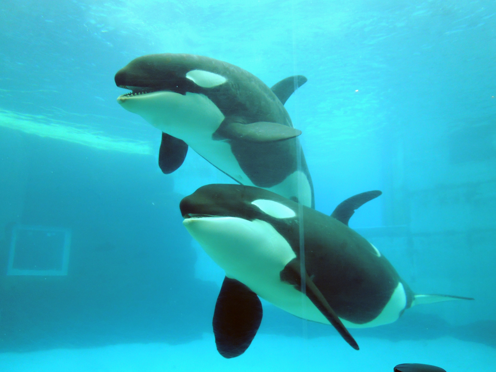

ポイント！

名古屋港水族館では、以下のショーやイベントが盛り沢山！
イルカショー
シャチの公開トレーニング
ベルーガの公開後レーニング
大人も子供も楽しめるショーが満載！
詳しくは下記のリンクへ
名古屋港水族館 イベント情報お子様と一緒に
おむつ替えスペース
おむつ替えスペースは南館に６箇所、北館に５箇所設置されています。詳しくは、下記の施設マップをご確認下さい。
授乳スペース
授乳スペースは北館南館１箇所づつ設置されています。北館はメイン入り口直ぐ横に、南館は２階のエレベーター横に設置されています。
食事スペース
館内にはレストランアリバタとフードコートトータスがあります。またお弁当などを持ち込んで食べるスペースも室内に２箇所ゴマちゃんデッキに１箇所設置されています。
走り回れる広場
(ごまちゃんデッキ)
ゴマちゃんデッキでは、室外という事で風を感じながらペンギンなどを見ることもでき、お天気の良い日は外でお弁当を広げて水族館ピクニックなんて素敵なこともできちゃいます！
さかな紹介
みんなのレビュー
名古屋港水族館へ行ってみた
0.2.4歳と水族館へ
午前中は比較的空いているので、オープンから入りました。チケットは事前に購入しておくと、
並ばずに入れるので、かなりの時間短縮になります。
一通り南館と北館を見た後は、ごまちゃんデッキで外を走らせて気分を入れ替え、
またお魚を見るという事をして一日過ごす事ができましたよ！ぜひ一度行ってみてください！